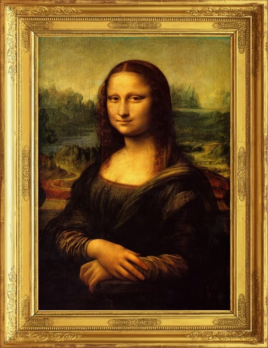

Indice
- Localização
- Idioma
- Cultura
- Desporto

Indice
|
|
A Itália é um país europeu, localizado no sul do continente, ocupando a quase totalidade da Península Italiana, mais as ilhas da Sardenha e Sicília. A capital da Itália é Roma, que é também a maior cidade do país. Ela compreende o vale do rio Pó, a Península Itálica e as duas maiores ilhas no mar Mediterrâneo, a Sicília e a Sardenha
O idioma oficial é o italiano, falado por quase toda a população. O italiano padrão é uma língua derivada do dialeto da Toscana, sobretudo aquele falado na região de Florença. Existem diversas línguas e dialetos falados no dia-a-dia pela população italiana, como o sardo (na Sardenha), napolitano (em Campânia), vêneto (no Vêneto), friulano (em Friuli-Venezia Giulia),Francês (no Valle d'Aosta), alemão (em Trentino-Alto
A Itália é um dos países que mais influência teve e tem na cultura europeia e mundial, em todas as áreas da arte e cultura. Enquanto país, não existia antes da unificação das Cidades-Estado.
Em função disto, muitas tradições culturais que hoje reconhecemos como italianas são mais associadas a regiões específicas do país. A Itália é o local de nascimento de diversos movimentos artísticos e intelectuais que se espalharam pela Europa e pelo mundo, como o Renascimento e o Barroco. Talvez a maior contribuição italiana para a arte e cultura resida nas obras dos artistas Michelangelo, Leonardo da Vinci, Donatello, Botticelli, Fra Angelico, Tintoretto, Caravaggio, Bernini, Ticiano e Rafael, entre outros. Além da pintura, escultura e arquitetura, as contribuições da Itália para a literatura, ciência e música são incontornáveis. A Itália é repleta de museus de arte. A arte romana e renascentista se destacam no país.
Podemos dizer que a arte italiana influenciou vários artistas e estilos artísticos durante a história.
|  |